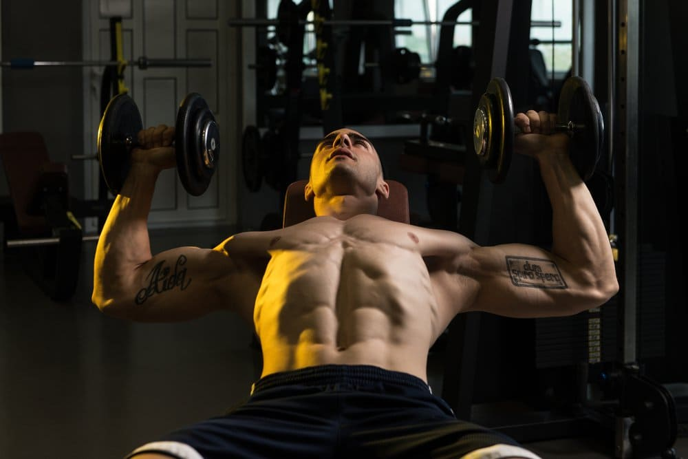

OS 2 MELHORES TREINOS DO MALVA
OI. COMO VAI?, NO SITE DO MALVA MOSTRARÁ OS MELHORES TREINOS DE MUSCULAÇÃO PARA TE AJUDAR COM ELE MALVADEZA.
SEGUE AQUI OS MELHORES TREINOS.
1. COSTAS NO CABO GUIADO

É ISSO UM DOS MELHORES EXERCICÍOS DE COSTAS REMADA UNI-LATERAL NO CABO GUIADO, COM ELE MALVADEZA.
SUAS CONTRIBUIÇÕES SÃO:
- FORTALECIMENTO DA LOMBAR.
- TREINO CONCENTRADO NA PARDE DA PEQUENA DORSAL E GRANDE DORSAL(2019).
- AUMENTO DE MASSA MUSCULAR NAS COSTAS.
APESAR DE SER UM EXERCICÍCIO POUCO USADO TRAZ MUITAS CONTRIBUIÇÕES.
2. SUPINO INCLINADO COM ALTERES
É UM MOVIMENTO MUITO ULTILIZADO PELOS MAROMBEIROS PRINCIPALMENTE PELO MALVA, UM MOVIMENTO SIMPLES MAS QUE EXIGE MUITA COORDENAÇÃO MOTORA.
SUAS CONTRIBUIÇÕES SÃO:
- AUMENTO DE MASSA MUSCULAR NO PEITORAL SUPERIOR.
- FORTALECIMENTO DAS LIGAÇÕES DO COTOELO.
- AUMENTO DA REGIÃO DO TRICEPS
SUAS CONTRIBUIÇÕES SÃO INUMERAS COMO JA FOI DEMOSTRADO.